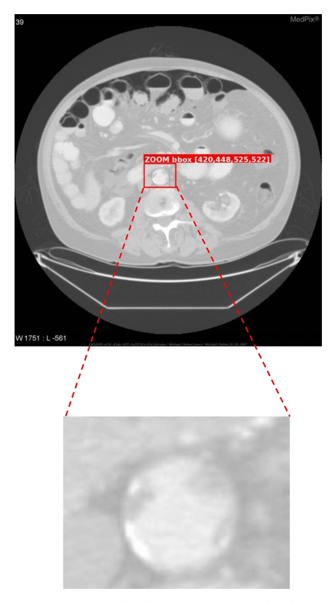
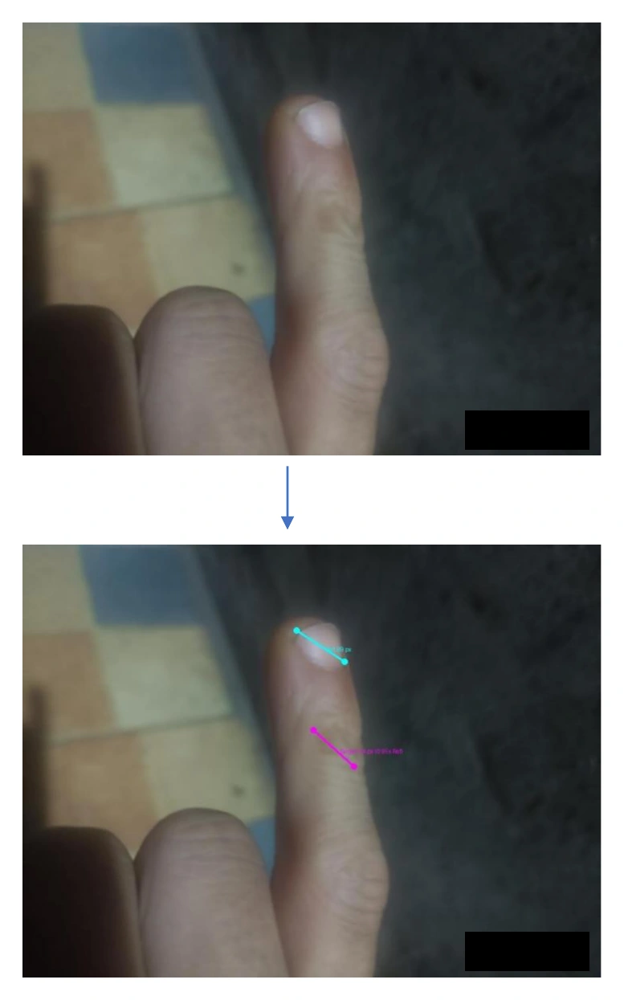
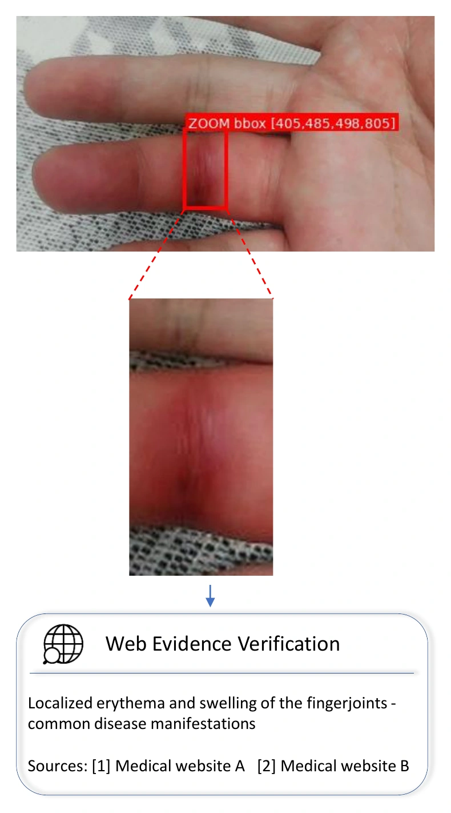
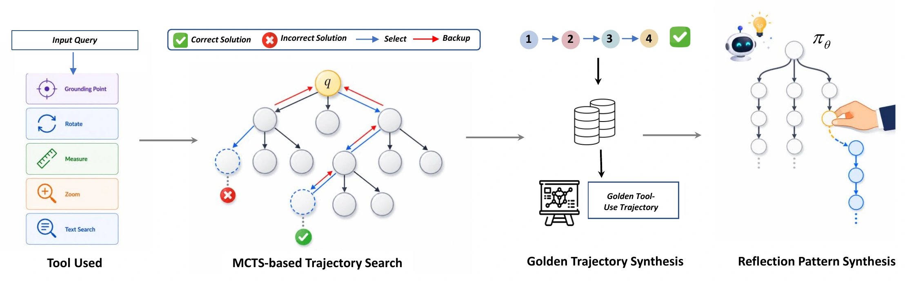
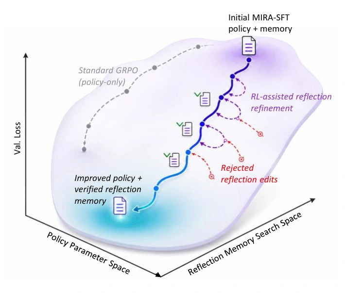
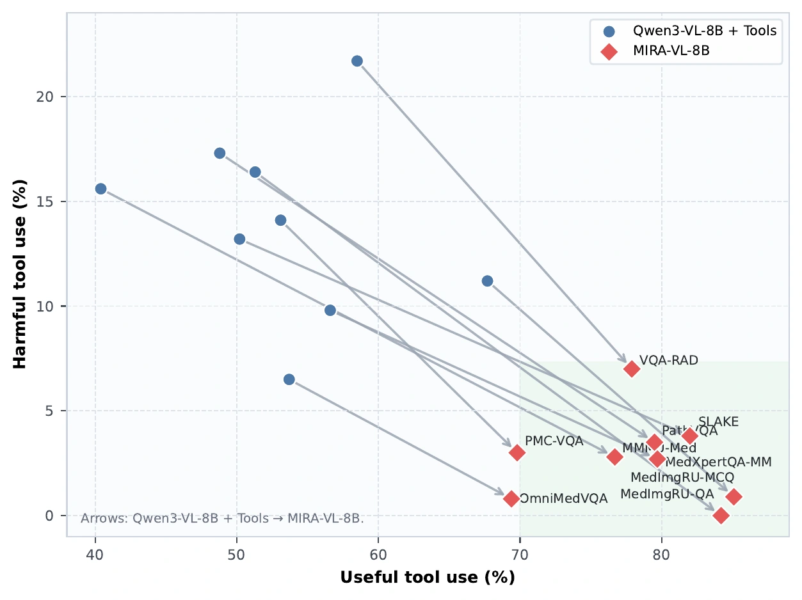

64.73
Average score
+7.44 score points from 57.29 across nine benchmarks.
Medical visual reasoning with reflective tool use
An agentic diagnostic framework that searches for evidence, verifies what its tools reveal, and corrects unreliable conclusions.
♠ Project Leader† Corresponding Author
Abstract
Medical visual agents can use tools to inspect images and retrieve knowledge, yet indiscriminate tool calls may introduce noisy or misleading evidence. MIRA combines autonomous evidence search with reflective verification: it decides when tools are needed, evaluates whether their outputs support the current hypothesis, and corrects unreliable paths. Training pairs tool-augmented Monte Carlo Tree Search with jointly verified visual and semantic signals to generate supervised fine-tuning data, then evolves reusable reflective principles online during reinforcement learning. Across nine medical visual reasoning benchmarks, MIRA reaches a 64.73 average, improving its backbone by 7.44 score points while making tool use more useful and less harmful.
64.73
+7.44 score points from 57.29 across nine benchmarks.
73.8%
+17.6 percentage points from 56.2%. Useful combines correct and insufficient-but-relevant categories.
1.6%
Down 7.3 percentage points from 8.9%, indicating fewer misleading tool interactions.
+28.57
Percentage-point improvement on VQA-RAD Understanding, Diagnosis, and Suggestion.
Qualitative cases
Three examples show how MIRA checks textual, visual, and retrieved evidence before finalizing a response.

After an uncertain global assessment, a targeted zoom reveals a focal high-density calcified focus along the abdominal aortic wall, enabling correction of the initial description.

The measurement tool compares a 94-pixel lesion long axis with a 99-pixel fingernail reference, yielding a 0.95 ratio for a more grounded size judgment.

Zoom localizes erythema and swelling at an interphalangeal joint; external search then contextualizes the observed presentation before the response is finalized.
Method
MIRA is developed in two complementary stages that improve both evidence acquisition and evidence verification.
Tool-augmented MCTS explores diverse diagnostic hypotheses. During expansion, visual grounding and semantic consistency are jointly verified, producing higher-quality trajectories for supervised fine-tuning.

Failures encountered during reinforcement learning are distilled into candidate diagnostic principles. A principle enters reflection memory only when it improves held-out rollout reward under the same frozen policy, preventing unhelpful updates from accumulating.

Results
Performance gains are accompanied by a shift toward evidence that helps rather than distracts.
MIRA consistently improves over its Qwen3-VL-8B backbone across a broad medical visual reasoning evaluation.
MIRA reaches 73.8% useful judgments and only 1.6% harmful judgments. In this analysis, desired movement is rightward toward useful evidence and downward away from harmful evidence.

Citation
MIRA is available as arXiv:2608.10827 in Computer Vision and Pattern Recognition, with a cross-listing in Artificial Intelligence.
View on arXivMIRA: Medical Image Reflection for Agentic Diagnosis
Shengzhi Wang, Jun Yang, Kai Wu, Xiaozhong Ji, Yiwen Ye, Ziyang Chen, Mingliang Xiong, Wen Fang, Mingqing Liu, Mengyuan Xu, Miaoxuan Shan, Caiyan Liu, Bin He, and Qingwen Liu.
arXiv:2608.10827 [cs.CV], 2026.
@misc{wang2026mira,
title={MIRA: Medical Image Reflection for Agentic Diagnosis},
author={Wang, Shengzhi and Yang, Jun and Wu, Kai and Ji, Xiaozhong and Ye, Yiwen and Chen, Ziyang and Xiong, Mingliang and Fang, Wen and Liu, Mingqing and Xu, Mengyuan and Shan, Miaoxuan and Liu, Caiyan and He, Bin and Liu, Qingwen},
year={2026},
eprint={2608.10827},
archivePrefix={arXiv},
primaryClass={cs.CV},
url={https://arxiv.org/abs/2608.10827}
}